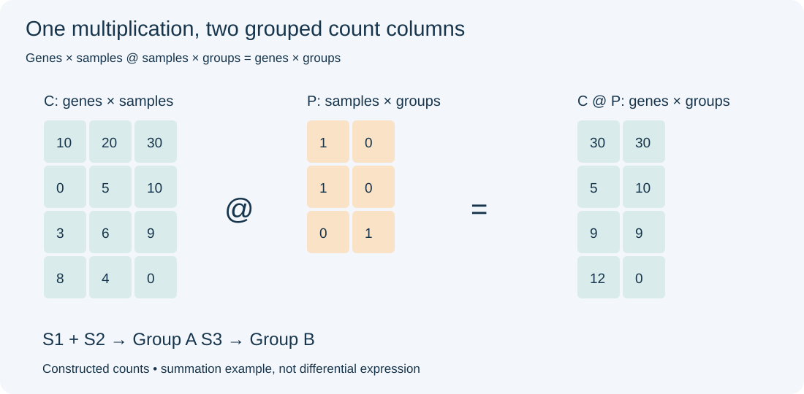
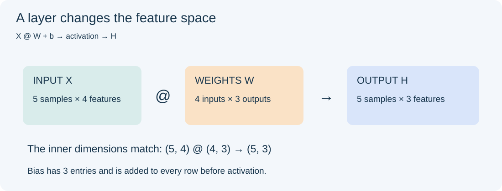
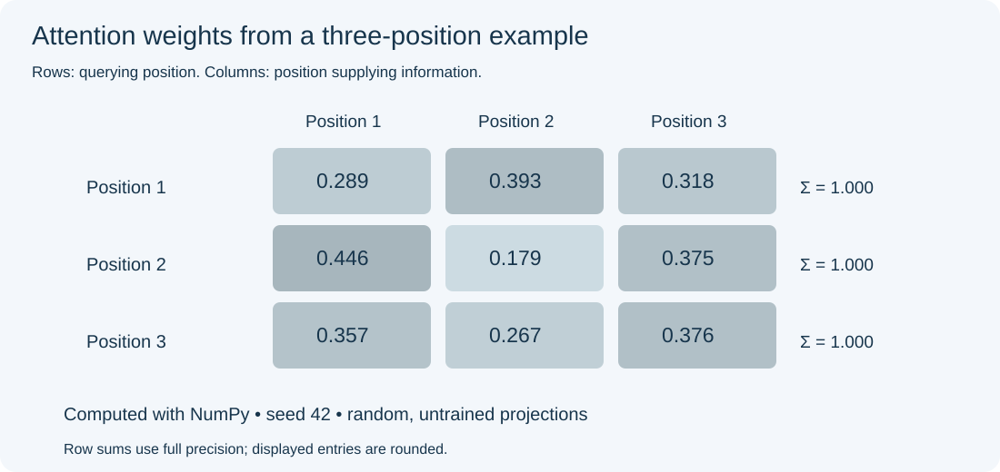

2026-10-12
第一次认真看“张量”这个词，我忍不住想：它怎么也姓张？要不要干脆把名字改成“张量”？以后介绍自己，就可以说：我和深度学习的关系，从名字就开始了。
当然，这只是一个姓张的人开的玩笑。
矩阵的名字也很有科技感。听到“矩阵科技”这样的名字，或者带着数学意味的“幻方”，很容易联想到整齐的数字、复杂的算法和机房里的计算。幻方本身就是一种有趣的数字方阵：各行、各列和两条主对角线上的数之和相同。
不过，矩阵不只是一个适合公司起名的词。打开一份表达数据，你可能每天都在用它。
先把几个名字放在一起：
| 名字 | 日常理解 | 数据例子 |
|---|---|---|
| 标量 | 一个数 | 一个样本的测序深度 |
| 向量 | 一串数 | 一个基因在多个样本中的表达 |
| 矩阵 | 数排成行和列 | 基因 × 样本的表达表 |
| 张量 | 可以有更多轴的数值数组 | 批次 × 序列位置 × 特征 |
在深度学习代码里，我们常把这样的多维数组叫作张量。数学里的张量还有更严格的定义，这里先从数据的形状理解就够了。注意，“有几个轴”和“矩阵的秩”是两回事，不能混用。
生物信息学中，很多看上去不同的数据，都可以整理成一张数值表：
| 数据 | 常见行 × 列 | 一个元素表示什么 |
|---|---|---|
| bulk RNA-seq | 基因 × 样本 | 分配给某个基因的 reads 或片段计数；也可能是估计计数 |
| 单细胞 RNA-seq | 基因 × 细胞 | 常见液滴式 UMI 数据中，是去重后的 UMI 计数 |
| ChIP-seq | peak × 样本 | 落在某个峰区域内的 reads 或片段数 |
| 药物反应 | 药物 × 样本 | 例如 IC50，或其他药物敏感性指标 |
单细胞矩阵里的数不一定是原始 reads 数。例如 Cell Ranger 的基因表达矩阵记录的是 UMI 计数：多条 reads 可能对应同一个被计数的分子。
行列方向也不是统一规定。某些软件使用“细胞 × 基因”。所以拿到矩阵，第一件事不是计算，而是确认：每一行、每一列、每一个数，分别代表什么？
IC50 还要留意单位、缺失值和测量范围。在可比的实验条件下，较小的 IC50 通常表示达到半数抑制所需浓度更低；不能把不同条件下的数直接混在一起比较。

图 1. 人工构造的四个基因、三个样本。矩阵乘法把 S1、S2 合并到组 A，把 S3 放到组 B。
假设 C 有四行、三列，行是基因，列是样本：
import numpy as np
C = np.array([
[10, 20, 30],
[ 0, 5, 10],
[ 3, 6, 9],
[ 8, 4, 0],
])
print(C.shape) # (4, 3)：基因 × 样本
print(C.T.shape) # (3, 4)：样本 × 基因转置没有改变表达值，只是交换了行列。机器学习工具常要求“样本在行、特征在列”，这时转置就很有用。
如果 A 是 m × k，B 是
k × n，那么：
\[ (AB)_{ij}=\sum_{r=1}^{k}A_{ir}B_{rj},\qquad AB\text{ 的形状是 }m\times n. \]
不用急着记公式。先理解一个输出值怎样产生：拿左边的一行、右边的一列，对应位置相乘，再把结果加起来。
比如，把 S1、S2 的计数相加，得到组 A；S3 单独作为组 B：
P = np.array([
[1, 0], # S1 → A
[1, 0], # S2 → A
[0, 1], # S3 → B
])
group_counts = C @ P
print(group_counts)
# [[30 30]
# [ 5 10]
# [ 9 9]
# [12 0]]这里 (4, 3) @ (3, 2) 得到
(4, 2)。中间的三个样本被汇总，留下四个基因和两个组。
这只是演示求和，不是组间差异分析。生物学重复不应为了方便而随意合并，测序深度和每组样本数也会影响总计数。单细胞 pseudobulk 通常按“生物学样本 × 细胞类型”分别汇总，以保留重复信息。
* 和
@，看起来差不多，做的事完全不同在 NumPy 中，* 是逐元素相乘；@
是矩阵乘法。官方文档说明了后者的形状规则。
A = np.array([[1, 2], [3, 4]])
B = np.array([[5, 6], [7, 8]])
print(A * B) # [[ 5, 12], [21, 32]]
print(A @ B) # [[19, 22], [43, 50]]两段代码都能运行，结果却不是同一回事。读代码时，这个小符号值得多看一眼。
矩阵也可以表示“沿哪些方向观察数据”。PCA 就是熟悉的例子：从许多特征里找出变化较大的方向，把样本投影过去。
下面用 SVD（奇异值分解）计算一个小例子的主成分坐标：
E = np.log1p(C.T.astype(float)) # 样本 × 基因
E_centered = E - E.mean(axis=0, keepdims=True)
U, s, Vt = np.linalg.svd(E_centered, full_matrices=False)
scores = E_centered @ Vt[:2].T
print(scores.shape) # (3, 2)Vt[:2].T 给出两个方向，scores
是三个样本在这两个方向上的坐标。NumPy
SVD 文档提供了分解与重建的关系。
这里直接 log1p 只是教学例子。真实 RNA-seq 做
PCA，需要先考虑测序深度、合适的数据变换，以及是否对各基因缩放。PCA
找到的是方差较大的方向，它不会自动判断这些差异来自疾病还是批次。
神经网络中的一个全连接层，可以写成：
\[H=f(XW+b).\]
X 放输入，W 放学到的权重，b
是偏置，f
是激活函数。每个输出特征，本质上先对输入特征做一次加权求和。

图 2. 五个样本，每个四个特征，经过 4 × 3
的权重矩阵，变成每个样本三个输出特征。偏置按行加入。
X = np.ones((5, 4))
W = np.ones((4, 3))
b = np.zeros(3)
H = np.maximum(0, X @ W + b) # ReLU
print(H.shape) # (5, 3)如果只有矩阵乘法和偏置，没有非线性激活，多个这样的层仍可以合成一个仿射变换。层数多，并不自动带来更复杂的表达能力。
批量处理序列时，输入还可能是
batch × tokens × features。数组变成三维，但最后两维仍常常在做矩阵乘法。名字变成张量，熟悉的运算并没有消失。
Transformer 里的注意力，听起来很复杂，但可以先抓住两个问题：
Transformer 原始论文中的缩放点积注意力写作：
\[\operatorname{Attention}(Q,K,V)=\operatorname{softmax}\left(\frac{QK^T}{\sqrt{d_k}}\right)V.\]
这里，输入经过不同权重得到 Q、K 和
V。Q @ K.T 计算各位置之间的分数；softmax
将每一行变成和为一的权重；再用这些权重对 V 加权求和。
下面是一个单头、无掩码的小例子，权重随机生成，没有训练：
rng = np.random.default_rng(42)
X = rng.normal(size=(3, 4)) # 三个位置，每个四个特征
Wq = rng.normal(size=(4, 2))
Wk = rng.normal(size=(4, 2))
Wv = rng.normal(size=(4, 2))
Q, K, V = X @ Wq, X @ Wk, X @ Wv
scores_attention = Q @ K.T / np.sqrt(Q.shape[1])
z = scores_attention - scores_attention.max(axis=-1, keepdims=True)
A = np.exp(z)
A /= A.sum(axis=-1, keepdims=True)
Y = A @ V
print(A.shape, Y.shape) # (3, 3) (3, 2)减去每行最大值，是为了让指数计算更稳定，不会改变 softmax
的结果。A 的一行说明某个位置如何分配权重，Y
则是汇总后的表示。

图 3. 运行上面固定种子的例子得到的注意力矩阵，每行之和为一。这是随机权重的演示，不是语言模型训练结果。
完整 Transformer 还包括多头、位置相关信息、残差连接、归一化和前馈网络。生成文本时通常还需要因果掩码，防止当前位置读取未来位置。上面的代码只展示一块核心运算。
从表达矩阵的分组求和，到 PCA 的投影，再到注意力的信息汇总，矩阵乘法一直在帮我们把一组数变成另一组数。真正需要想清楚的，是行列代表什么、权重从哪里来，以及输出要回答什么问题。
完整例子保存在 matrix_demo.py，需要 NumPy：
python3 examples/matrix_demo.py本文例子已在 NumPy 2.3.5 下运行，检查了分组结果、SVD 重建和注意力权重的行和。全部数据为教学构造，不是真实测序数据。